INVESTIGATION
The theme that I chose for the project is Education and literacy rates around the world. Before reaching this topic, I reviewed the links included in the brief, so I had a good understanding of what was being requested. Based on this I started exploring different ideas. Here are some of the areas I explored and the reasons why they were not chosen
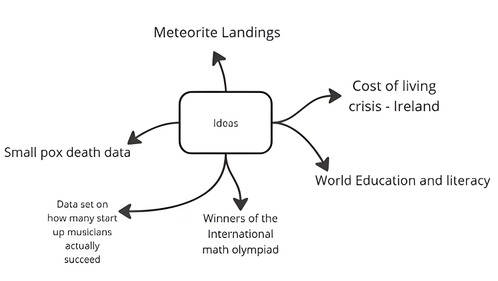
- Meteorite landing on earth: This topic was the first one that came to mind. There are datasets available on Kaggle but unfortunately, I failed to find any existing websites that properly displayed this information, and felt this topic would not be of interest to a wide audience..
- Smallpox population data: This topic has vast potential in terms of data analysis, but I felt it may not be very relevant at this time as it is more of an historic disease.
The topic that I settled on is – World education and literacy data. This was an all-rounder topic that is a personal interest of mine and useful for the entire world, households, the government, and economists. With this topic users will gain insights into a country’s education quality. This information system will be aimed at helping individuals (18+) making more informed decisions on their academic futures
There were many existing information systems that were centered around this topic, which made this topic even more attractive. Here are a few of the existing information systems I found. These are websites that I got inspired from to make the information system, both visually and analytically
- UNESCO: provides data on literacy rates, enrollment rates, and student to teacher ratio.
- OECD: Analyzes educational performance, funding, and policies in developed countries
- World education data at kaggle: provides enrollment rates, completion rates, OOSR rates and more, in an easy to read format.
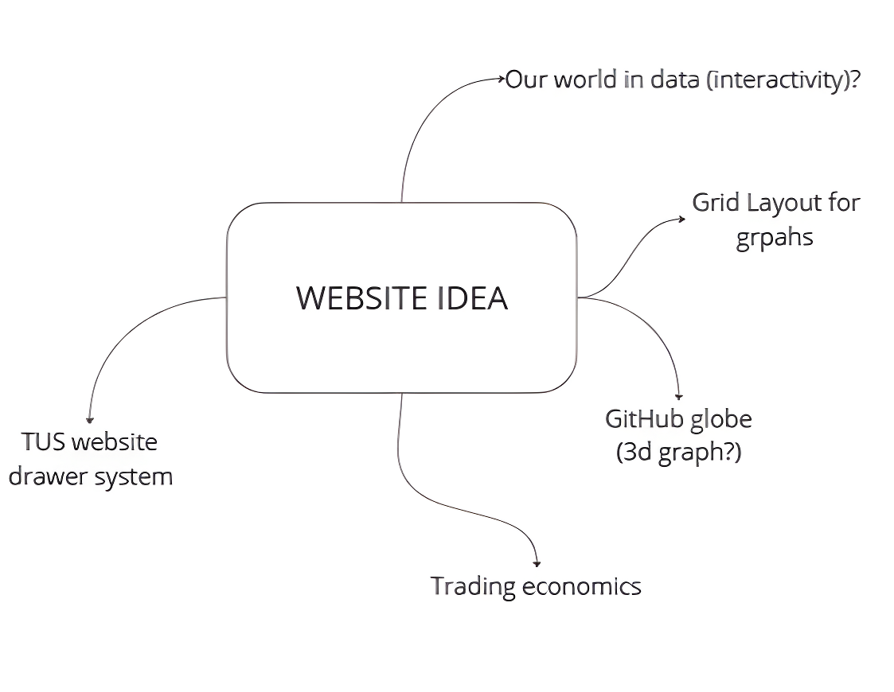
Trading economics: This website has a great user interface and a multitude of user interactivity, such as type changes, scale changes etc... And it has other suggestions below the graph which shows “related material” and the user can click them to go through them. visit this website here
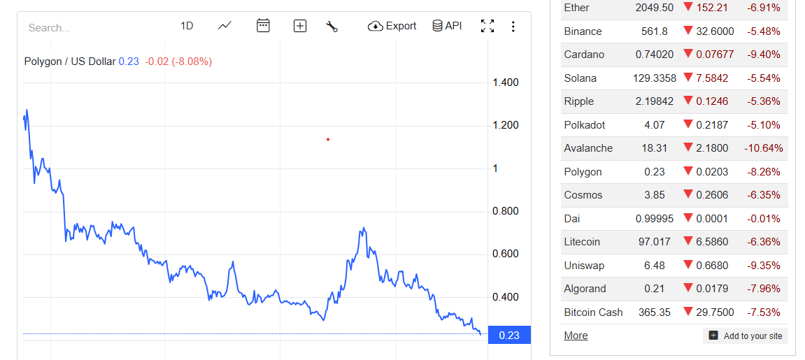
GitHub Globe:I was also inspired by the GitHub globe website. It’s a 3d globe that shows the commits taking place all over the world. It's made using THREE js. I made it my mission to achieve something like that for this project.
visit this website here
Drawer System: The website for TUS has an incredible drawer system that reveals more information when clicked. This will be perfect for my website as I can store the canvas inside those drawers.
visit this website here
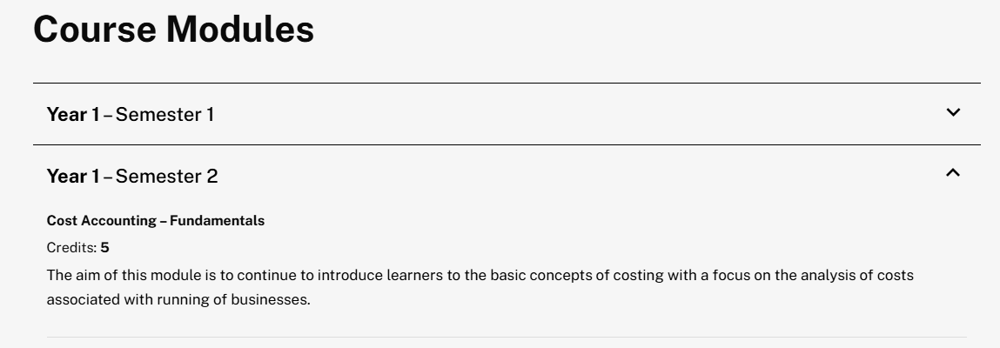
PLAN AND DESIGN
The idea I selected for this project was to perform data analysis and visualization on world education. The target audience is people over 18 who are trying to make informed decisions on their/their family's academic futures.
This information system will provide users with useful information about the following:
- Education pressure index: shows how well the education system can keep up with the birthrate
- OOSR: rate shows the percentage of population out of school
- Completion rate shows the percentage of male and female that complete their studies
- Compare and contrast, it will allow the user to compare the unemployment rate, enrollment rates and out of school rates
After exploring the information system, they will be able to make more informed decisions about their academic futures
From an ethical point of view, my primary concern would be that the information provided may be used to discriminate against individuals from countries that may not perform as well in the analysis.
The information system will meets both the basic and the advanced requirements:
- The chosen dataset will be cleaned and parsed in python and the data stored on firebase.
- Python will be used with the appropriate datatype (dictionaries, lists) to carry out the necessary analysis used for the basic python visualizations and for the interactive visualizations on the webpage. This data will be stored on Firebase.
- An information system will be created to display graphs in an interactive format
- The website will have a survey section which collects and summarizes user information. The survey will request at least three different data types, and this data will be stored on firebase
- A separate section at the end of the main page will help the user to make informed decisions based on the previous python analysis
I will make sure to keep in mind key user interface principles, eg: clean UI, more accessible UI, easy to understand etc...
TECHNOLOGIES THAT WILL BE IN USE:
- Thonny and Visual Studio IDEs for coding the project.
- Live Server on VS code to run the website.
- Chart.js for drawing the interactive charts on the webpage, matplotlib for drawing. the basic charts in Python.
- Three.js for an interactive earth model
- Firebase to store the cleaned dataset and other information.
- OBS to record the video and Kdenlive to edit it.
- The languages used will be Python, JS and HTML/CSS
Here are the high-level flowcharts for the main pages on the information system.For more detailed flowcharts of other files, got to the project directory
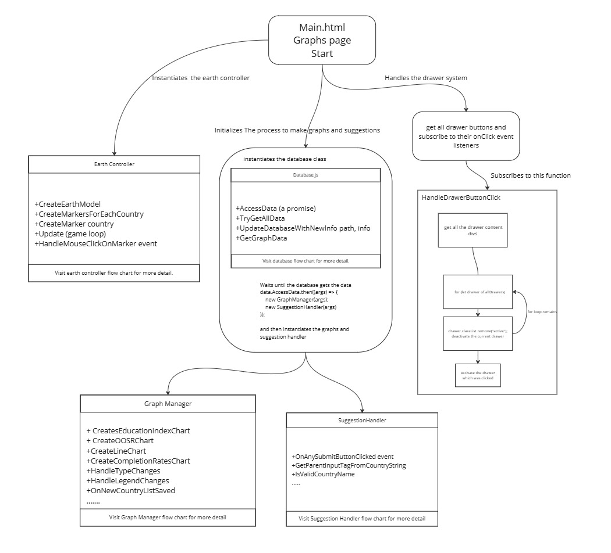
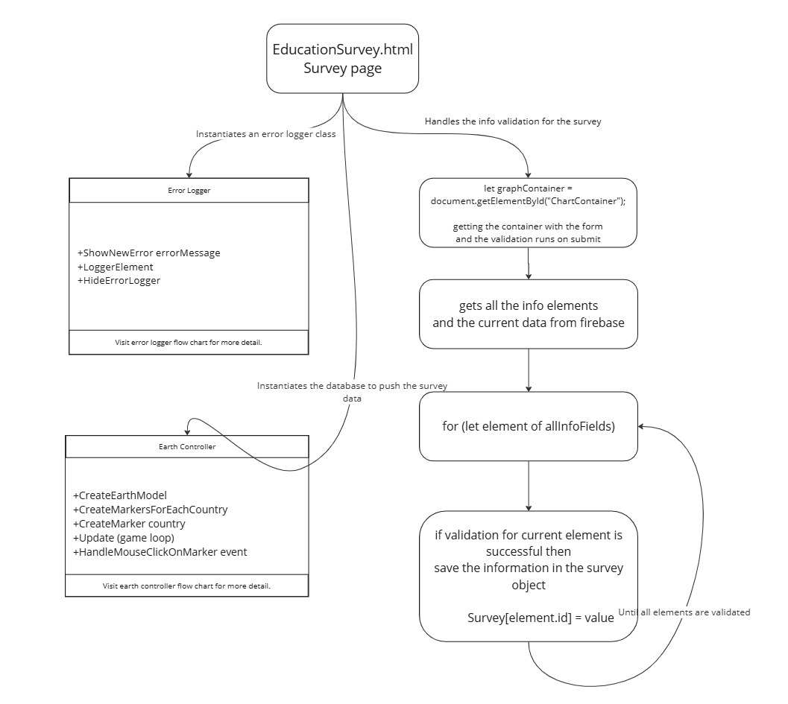
Wireframes
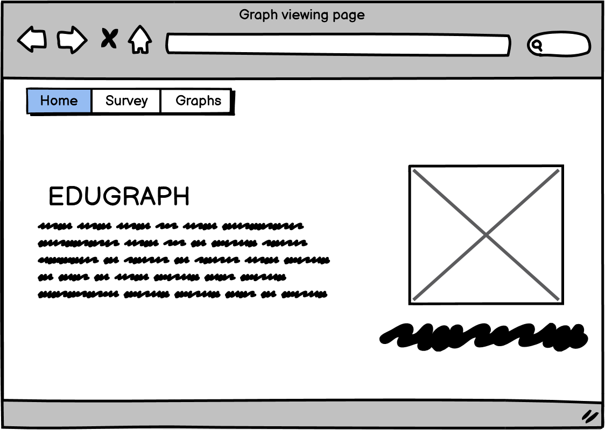
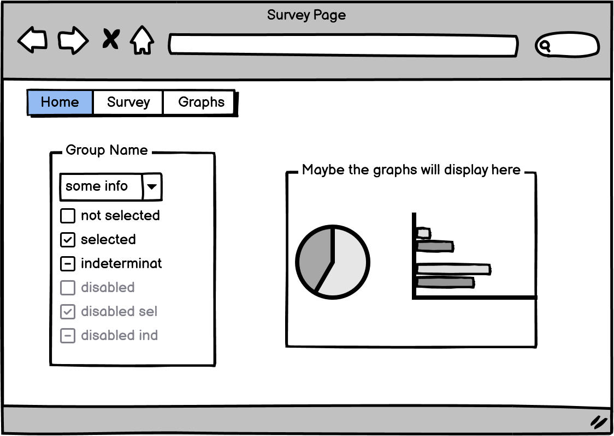
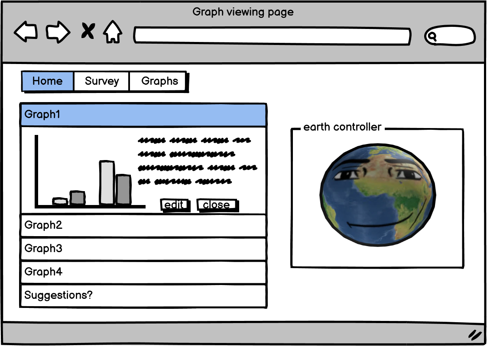
CREATE
Here is the progress log. NOTE: it includes the holiday weeks as well
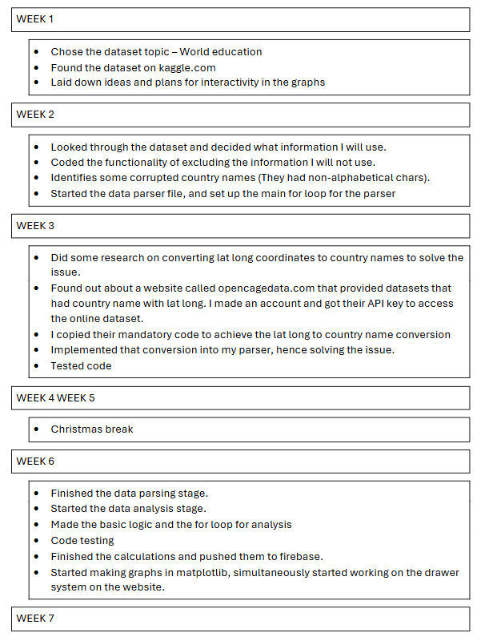
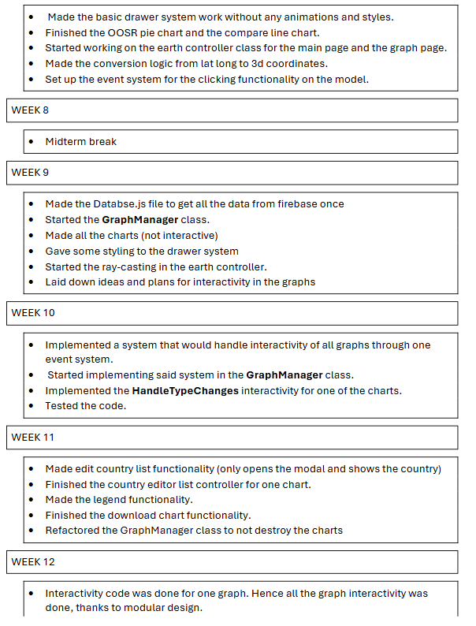
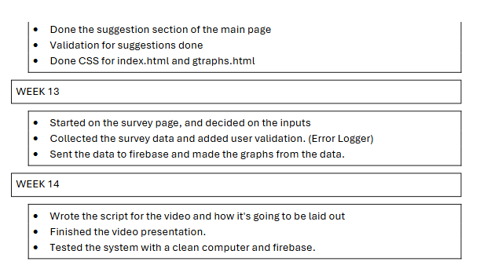
One of the problems I encountered was during the implementation of the download chart functionality in the GraphManager class. Initially the GraphManager destroyed its chart before recreating them with the new information (avoids clipping of visuals when chart type changes), and this caused errors during downloading the chart. Below is the code responsible for that.
GraphManager.js
DownloadChart(chart) {
let canvas = chart.data.chartCanvas; // access the canvas from the chart
let link = document.createElement("a");
link.href = canvas.toDataURL("image/png");
link.download = `${chart.data.chartName}.png`;
link.click(); // simulate download.
}
RefreshChartWithNewInformation(chart) {
this.ResetAllCheckBoxesToDefaultChecked();
let currentChartName = chart.data.chartName;
chart.destroy(); // destroys the chart
let lookUpObject = {
"lineChart" : () => this.CreateLineChart(chart),
"OOSR" : () => this.CreateOOSRChart(chart),
"educationIndex" : () => this.CreateEducationIndexChart(chart),
"completionRateChart" : () => this.CreateCompletionRateChart(chart)
}
lookUpObject[currentChartName](); // calls the corresponding chart recreation method
}
This architecture did work, and destroyed charts were successfully replaced by new ones. Although each time a chart was destroyed it held lingering references with the canvas. This became an issue when I made the download functionality.
I found two solutions for this
- To ensure definite destruction of the chart to avoid lingering references and reset the canvas itself.
- Refactor the entire GraphManager class to work without destroying the chart.
ObsoleteGraphManager.js
DownloadChart(chart) {
let canvas = chart.data.chartCanvas; // access the canvas from the chart
let link = document.createElement("a");
link.href = canvas.toDataURL("image/png");
link.download = `${chart.data.chartName}.png`;
link.click(); // simulate download.
}
RefreshChartWithNewInformation(chart) {
this.ResetAllCheckBoxesToDefaultChecked();
let currentChartName = chart.data.chartName;
let canvas = chart.canvas; // store the canvas before destroying
if (this.charts[chart.data.chartName]) { // find the reference and delete it
delete this.charts[chart.data.chartName];
chart.destroy(); // then destroy the chart
}
// reset the canvas
canvas.getContext("2d").clearRect(0, 0, canvas.width, canvas.height);
let lookUpObject = {
"lineChart" : () => this.CreateLineChart(chart),
"OOSR" : () => this.CreateOOSRChart(chart),
"educationIndex" : () => this.CreateEducationIndexChart(chart),
"completionRateChart" : () => this.CreateCompletionRateChart(chart)
}
lookUpObject[currentChartName]();
}
Even though this solution worked, I took this opportunity to implement the second solution. This meant refactoring the entire class to work without destroying the charts.
Implementing this approach improved optimization, as it does not destroy the chart every time the user interacts with it. It also allowed the code to be more readable, and clean.
This approach showed a significant increase in performance as seen by these numbers below. The measure the time it took for an interactivity to finish.
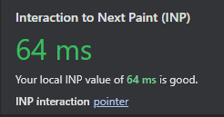
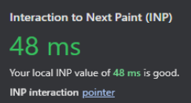
With Destroying the chart
Without Destroying the charts
Here is the updated code for the second solution
GraphManager.js
DownloadChart(chart) {
let link = document.createElement("a");
link.href = chart.toBase64Image(); // chart is not destroyed
link.download = `${chart.data.chartName}.png`;
link.click(); // simulate download
}
RefreshChart(chart) {
if (chart.data.hasTypeChanged) {
this.ResetChartCheckBoxesToDefaultChecked(chart);
chart.data.hasTypeChanged = false;
}
chart.options.scales = {}; // reset the scales to avoid clipping when type changes
chart.update(); // updates the chart instead of destroying.
}
NOTE: Visit ObsoleteGraphManager and GraphManager to see all the changes.
ALGORITHM USED IN DATA ANALYSIS:
The main analysis I had to do consisted of means, averages and other formulas to calculate economic measures. The algorithm I implemented to achieve this is detailed below along with the relevant pseudocode
pseudo.js
// inside GraphCalculations method
// set up the skeleton for the final dataset.
// graphDataset = {
//“Line of Countries”: [],
//“Education Pressure Index: [] ....
// set up the rest of the skeleton
}
// loop through all the countries to fill in the skeleton
// perCountryOOSR = get the out of school rate for the
//current country
// set that in the skeleton.
// if the current index is in the index List of
//completion Rate graph:
// then get the male and female completion rates and set that in
//the skeleton.
// perCountryEducationPressureIndex = get the education pressure
//index for current country.
// set this info in the skeleton.
// enrollment = get average enrollment rates for current country
// get the unemployment rate and the OOSR rate and set this in
//the skeleton
// finally push it to firebase.
// push the skeleton for survey data, so that JavaScript can use it
The OOSR is calculated by getting the total average OOSR across all genders. It shows the percentage of the population out of school.
The education pressure index is calculated by subtracting the birth rate from the enrollment rates. This shows whether a country’s education system is able to keep up with the birth rate.
The completion rates by gender are the average of each gender in each education level. This shows how much percentage of population enrolled complete their education.
I carried out extensive testing of my code. Below is a test table which shows some of the testing that I carried out during the course of the project;
Testing data JavaScript;
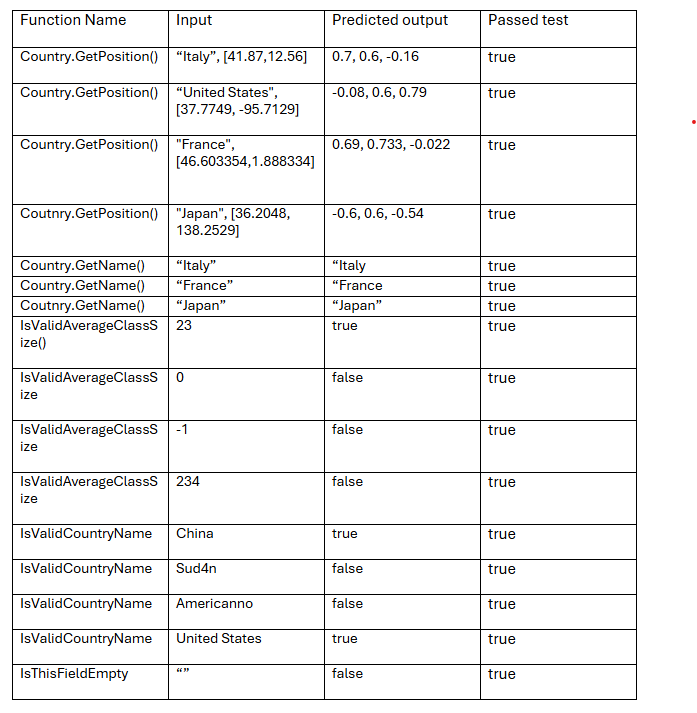 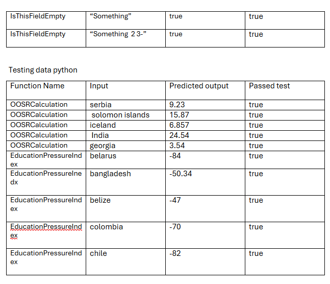 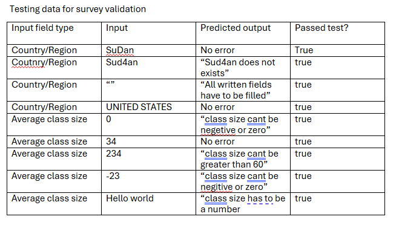
EVALUATION
My completed project successfully meets all requirements in the project brief.
I used python to successfully read and clean raw data which was then stored on Firebase. From this data I carried out analysis (also sent subsequently to Firebase) which allowed me to create non-interactive graphs using matplotlib and interactive versions of the same graphs in my website.
Each graph having the necessary titles and legends where appropriate.
There is a separate section on the website that gives suggestions to the user based on the analysis. and the website has a validated survey form that receives and stores the user data in firebase in real time. Those submissions are then summarized and graphed using JavaScript. All the graphs are labeled and easy to use.
Listed below are a few ideas that I feel would really improve the website in the future: :
- User personalization: I could implement an AI chat bot by either using a prebuilt one (OpenAI, Drift, Dialog Flow etc..) by using their API keys. Or by creating my own using AI frameworks in JavaScript. This would increase the user experience by a huge magnitude, as it would provide personalized outputs.
- User Authentication (login and sign up) : I was planning to implement this in the project although I did not have enough time for that. With a user authentication, the website can identify the user and give personalized suggestions among other things.
- Improving data quality and insights: I could add a more advanced and qualified data set and then create more accurate measurements of a country’s education quality. I could also implement a feature where users could submit their own data from their particular country which would give a more personal feel to the data set and allow users to get feedback from people who have actually gone through the education system in a particular country and so give an insight beyond just numbers on a screen.
REFERENCES AND WORD COUNT
Documentations I used:
Websites I used for inspiration
- GitHub globe
- Trading economics (interactivity)
- Our world in data
- TUS Drawer system
- Central Statics Office
WORD COUNT:

THANK YOU FOR READING MY PROJECT